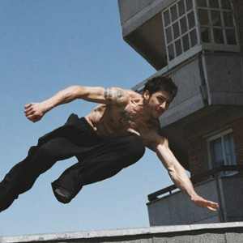

A new sport takes over the city.
What do the following sports consists of? Give a brief description of each one.
Listen to the article many times. Which extreme sport is it about? What does it consist of?
Ever climbed up a building? Bounced of walls? Or jumped from rooftop to rooftop? Parkour practitioners do it every day. Parkour is the “art of displacement,” or the ability to move from one place to another as fast as possible. You use only your body and there is no safety equipment (as in other extreme sports). Practitioners, called “traceurs” (which means “to go fast”, in French), say it is an art form – an interaction between the buildings and structures that surround you – combining aesthetics and physical control. These days, Parkour is popping up everywhere, including Hollywood. The 2006 James Bond film Casino Royale opens with a scene featuring parkour “traceur” Sebastien Foucan. He grew up practising parkour in Paris. “I always thought of parkour as an art,” he says in an interview with BBC News. “When I practise my art, I feel a real connection between my body, spirit and my environment.” Traceurs often refer to parkour as a philosophy or a way of life rather than a sport. “In a lot of ways, Parkour is a means of reclaiming what it means to be a human being. It teaches us to move using the natural methods that we should have learned from infancy. It teaches us to touch the world and interact with it, instead of being sheltered by it,” says one American “traceur”. ✪
Read the article. Then give a one-minute (100-word) summary of the main points. Try to use the following words.
There are various prepositions of movement in this article. Complete each sentence with the correct preposition.
David Belle is credited with being the creator of parkour. He was born in 1973, in Fécamp, France. He was inspired by his father, a fireman. Belle created parkour after finishing French military service and getting a black belt in Kung Fu. He says, “The physical aspect of parkour is getting over all obstacles in your path as you would in an emergency. You want to move in such a way, with any movement, to help you gain the most ground on something, whether escaping from it or chasing toward it.” Belle describes parkour as “a state of mind, giving you a better knowledge of your body, so you can overcome obstacles in the real world or in a virtual world…” Parkour clubs include all ages and all types of people. One North American parkour club has members ranging from age 9 to 55. David Belle teaches parkour in Paris. He appears in many French ads and films, as well as in commercials for the BBC, Nike and Nissan.
